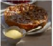

dessertWEB
Apple Bavanrian Torte(⋆⋆⋆⋆⋆)

A classic European torte baked in a springform pan. Cream cheese, sliced almonds, and apples make this the perfect holiday treat (12 servings)
INGREDIENTS
- 1/2 cup butter
- 1/3 cup white sugar
- 1/4 seaspoon vanilla extract
- 1 cup all-purpose flour
- 1(8 ounce) package cream cheese
- 1/4 cup white sugar
- 1 egg
- 1/2 teaspoon vanilla extract
- 6 apples peeled, cored, and sliced 1/3 cup white sugar
- 1/2 teaspoon ground cinnamon
- 1/4 cup sliced almonds
DICRECTIONS
- 1. Preheat oven to 450 degrees F (230 degrees C).
- 2. Cream together butter, sugar, vanilla, and flour.
- 3. Press crust mixture into the flat bottom of a 9-inch springform pan. Set aside.
- 4. In a medium bowl, blend cream cheese and sugar. Beat in egg and vanilla. Pour cheese mixture over crust
- 5. Toss apples with sugar and cinnamon. Spread apple mixture over all
- 6. Bake for 10 minutes. Reduce heat to 400 degrees F (200 degrees C) and continue baking for 25 minutes
- 7. Sprinkle almonds over top of torte. Continue baking until lightly browned. Cool before removing from pan
REVIEWS
I ⋆⋆⋆⋆
- 4 stars I loved the buttery taste of the crust which complements the apples very nicely-Reviewed on Sep 22, 2010 by MMASON
II ⋆⋆⋆⋆
- Nothing special. I like the crust, but there was a little too much of it for my taste, and I liked the filling but there was too little of it. I thought the crunchy apples combined with the sliced almonds detracted from the overall flavor-Reviewed on Sep. 1. 2010 by GLENDACHEF
III ⋆⋆⋆⋆
- Delicious!! I recommend microwaving the apples for 3 minutes before baking, to soften them. Great dessert - I'll be making it again for the holidays.-- Reviewed on August 28, 2010 by BBABS